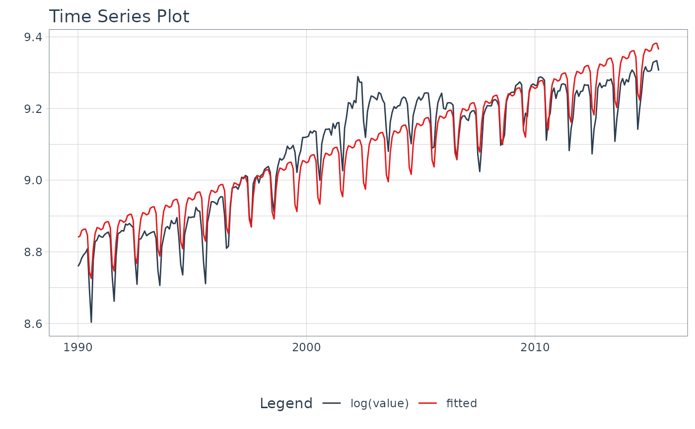
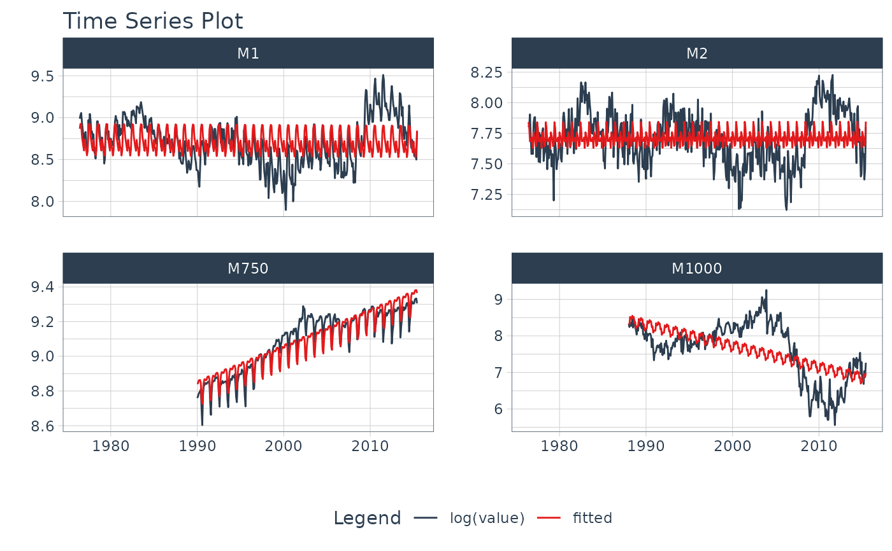

Visualize a Time Series Linear Regression Formula
Source:R/plot-time_series_regression.R
plot_time_series_regression.RdA wrapper for stats::lm() that overlays a
linear regression fitted model over a time series, which can help
show the effect of feature engineering
Arguments
- .data
A
tibbleordata.framewith a time-based column- .date_var
A column containing either date or date-time values
- .formula
A linear regression formula. The left-hand side of the formula is used as the y-axis value. The right-hand side of the formula is used to develop the linear regression model. See
stats::lm()for details.- .show_summary
If
TRUE, prints thesummary.lm().- ...
Additional arguments passed to
plot_time_series()
Details
plot_time_series_regression() is a scalable function that works with both ungrouped and grouped
data.frame objects (and tibbles!).
Time Series Formula
The .formula uses stats::lm() to apply a linear regression, which is used to visualize
the effect of feature engineering on a time series.
The left-hand side of the formula is used as the y-axis value.
The right-hand side of the formula is used to develop the linear regression model.
Interactive by Default
plot_time_series_regression() is built for exploration using:
Interactive Plots:
plotly(default) - Great for exploring!Static Plots:
ggplot2(set.interactive = FALSE) - Great for PDF Reports
By default, an interactive plotly visualization is returned.
Scalable with Facets & Dplyr Groups
plot_time_series_regression() returns multiple time series plots using ggplot2 facets:
group_by()- If groups are detected, multiple facets are returnedplot_time_series_regression(.facet_vars)- You can manually supply facets as well.
Examples
library(dplyr)
library(lubridate)
# ---- SINGLE SERIES ----
m4_monthly %>%
filter(id == "M750") %>%
plot_time_series_regression(
.date_var = date,
.formula = log(value) ~ as.numeric(date) + month(date, label = TRUE),
.show_summary = TRUE,
.facet_ncol = 2,
.interactive = FALSE
)
#>
#> Call:
#> stats::lm(formula = .formula, data = df)
#>
#> Residuals:
#> Min 1Q Median 3Q Max
#> -0.12770 -0.05159 -0.01753 0.05142 0.17828
#>
#> Coefficients:
#> Estimate Std. Error t value Pr(>|t|)
#> (Intercept) 8.407e+00 1.651e-02 509.199 < 2e-16 ***
#> as.numeric(date) 5.679e-05 1.348e-06 42.118 < 2e-16 ***
#> month(date, label = TRUE).L -3.584e-02 1.256e-02 -2.854 0.004625 **
#> month(date, label = TRUE).Q 7.509e-02 1.256e-02 5.979 6.51e-09 ***
#> month(date, label = TRUE).C 7.879e-02 1.256e-02 6.273 1.27e-09 ***
#> month(date, label = TRUE)^4 -4.931e-02 1.256e-02 -3.926 0.000108 ***
#> month(date, label = TRUE)^5 -7.964e-02 1.256e-02 -6.341 8.61e-10 ***
#> month(date, label = TRUE)^6 1.215e-02 1.256e-02 0.967 0.334270
#> month(date, label = TRUE)^7 5.196e-02 1.256e-02 4.137 4.60e-05 ***
#> month(date, label = TRUE)^8 1.200e-02 1.256e-02 0.955 0.340143
#> month(date, label = TRUE)^9 -3.433e-02 1.256e-02 -2.733 0.006652 **
#> month(date, label = TRUE)^10 -1.566e-02 1.256e-02 -1.247 0.213483
#> month(date, label = TRUE)^11 1.182e-02 1.256e-02 0.941 0.347375
#> ---
#> Signif. codes: 0 ‘***’ 0.001 ‘**’ 0.01 ‘*’ 0.05 ‘.’ 0.1 ‘ ’ 1
#>
#> Residual standard error: 0.06341 on 293 degrees of freedom
#> Multiple R-squared: 0.8695, Adjusted R-squared: 0.8641
#> F-statistic: 162.6 on 12 and 293 DF, p-value: < 2.2e-16
#>

# ---- GROUPED SERIES ----
m4_monthly %>%
group_by(id) %>%
plot_time_series_regression(
.date_var = date,
.formula = log(value) ~ as.numeric(date) + month(date, label = TRUE),
.facet_ncol = 2,
.interactive = FALSE
)
